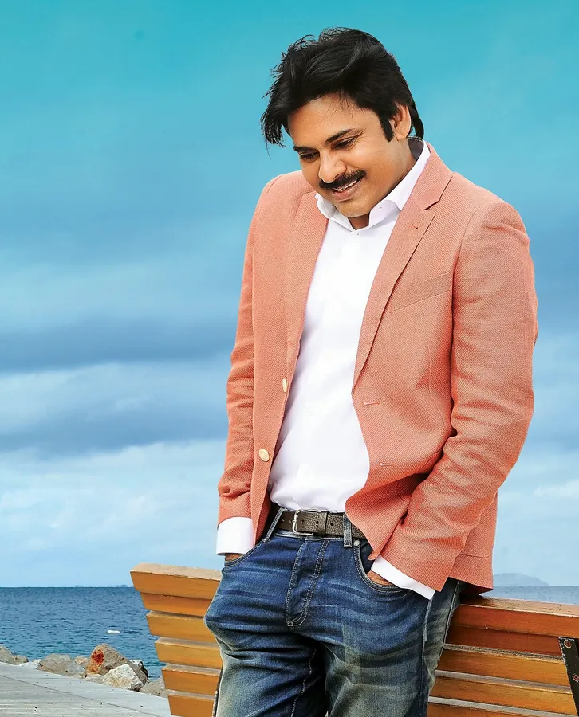

Konidela Pawan Kalyan[5] (born Konidela Kalyan Babu;[8] 2 September 1971)[2] is an Indian politician, actor, philanthropist, and martial artist serving as the 11th Deputy Chief Minister of Andhra Pradesh since June 2024. He is also the Minister of Panchayat Raj, Rural Development and Rural Water Supply; Environment, Forest, Science and Technology in the Government of Andhra Pradesh as MLA representing the Pithapuram constituency.[3] He is the founding president of the Janasena Party. As an actor, Kalyan is known for his distinctive style and mannerisms in Telugu cinema. He enjoys a huge fanbase across the Telugu states, often described as "unfathomable," "fiercely loyal," and akin to a "cult following."[12] He is among the highest-paid actors in Indian cinema and has been featured in Forbes India's Celebrity 100 list multiple times since 2012.[13][18] He is the recipient of a Filmfare Award and a SIIMA Award among other accolades. Kalyan made his acting debut in the 1996 film Akkada Ammayi Ikkada Abbayi. Then, he had a streak of six consecutive hits, among which Tholi Prema (1998), Thammudu (1999), Badri (2000), and Kushi (2001) became back-to-back blockbusters. These films established Kalyan as a youth icon with a massive following distinct from his elder brother Chiranjeevi's fanbase.[9][11] In 2001, he became the first ever South Indian brand ambassador for Pepsi.[22] Kalyan later faced a slump, yet his popularity kept soaring despite the flops.[24] He made a comeback with Jalsa (2008), the highest-grossing Telugu film of that year, and continued with hits like Gabbar Singh (2012), Attarintiki Daredi (2013), Gopala Gopala (2015), and Bheemla Nayak (2022). He received the Filmfare Award for Best Actor for Gabbar Singh. Both Kushi and Attarintiki Daredi held the record for the highest-grossing Telugu film of its era. Kalyan holds a black belt in Karate.[26] In 1997, he was awarded the title "Pawan" by the Isshin-ryū Karate Association after a public martial arts demonstration.[27] He practices various martial arts, which he regularly showcases in his films both as a performer and an action choreographer. He is known as the "Power Star" among his fans and the media.[28] Kalyan is also recognized for his extensive philanthropic work, supporting various social causes.[29] He has offered financial assistance to both individuals and organizations in need. In 2007, he established the charity Common Man Protection Force.[32] In March 2014, Pawan Kalyan founded the Janasena Party (JSP). Although he chose not to contest the 2014 elections, his support and campaigns were pivotal in securing victory for the TDP-BJP alliance in Andhra Pradesh.[33] He later brought national attention to the chronic kidney disease crisis in Uddanam,[34] and led protests against forced land acquisition,[31] and illegal mining in reserved forests.[35] In 2019, JSP contested its first elections, winning one MLA seat with around 6% of the vote. Following this, Kalyan and JSP focused on issues such as farmer welfare, illegal sand mining, women's safety, and land encroachment. In 2023, he launched a state-wide tour in his customized vehicle 'Varahi' to connect with voters. In the 2024 elections, Kalyan played a key role in forming an alliance between JSP, TDP, and BJP, which led to a landslide victory.[36] Janasena won each of the 21 MLA seats and 2 MP seats it contested. Kalyan was elected from the Pithapuram constituency by a margin of over 70,000 votes, subsequently becoming the deputy chief minister.